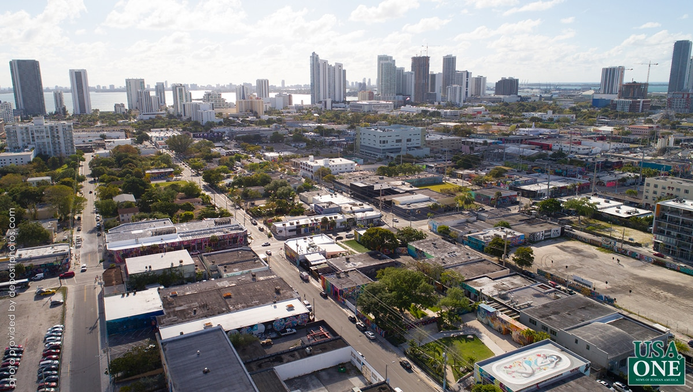
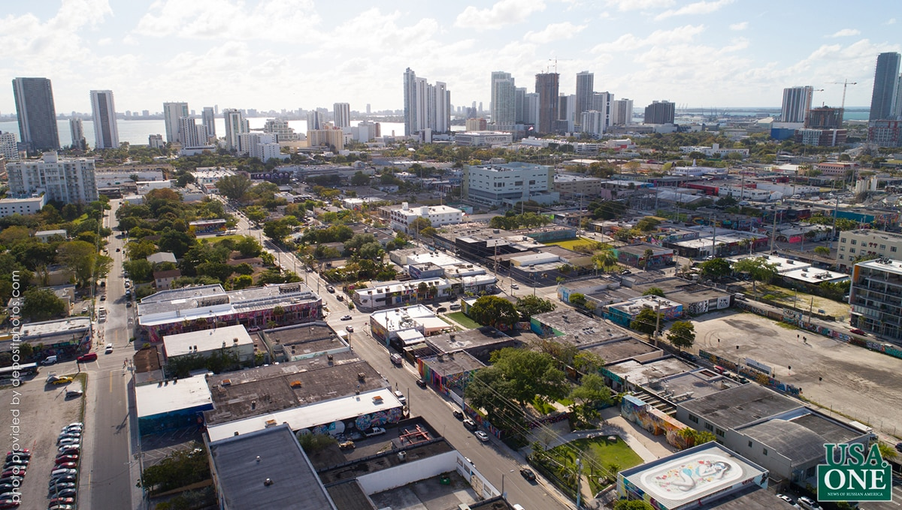

САЩ

Тип:
Държава
Време:
1776-...
САЩ
Съединени щати (англ. The United States of America [ði juˌnaɪtɪd ˌsteɪts əv əˈmerɪkə]), съкратено на САЩ (англ. САЩ), или Съединените щати (англ. САЩ (на английски: United States) е държава в Северна Америка. Площ-9,5 милиона km2 (4-то място в света). Населението е около 329 милиона души (2020, оценка; 3 - то място в света). САЩ имат федерална форма на устройство, административно разделени на 50 държави и Федерален окръг Колумбия; в тяхно подчинение са и редица островни територии (Пуерто Рико, Вирджински острови, Гуам и други). Столицата е град Вашингтон (Окръг Колумбия), а най-големият по население е град Ню Йорк. Съединените щати граничат на север с Канада, на юг с Мексико, също имат морска граница с Русия на запад. Измиват се от Тихия океан от запад, Атлантическия океан от изток и Северния ледовит океан от север. Съединените американски щати са създадени през 1776 г.с обединението на тринадесет британски колонии, които обявяват своята независимост. Войната за независимост продължава до 1783 г.и завършва с победа на колонистите. През 1787 г.е приета Конституцията на САЩ, а през 1791 г. — законопроект за правата, който значително ограничава правомощията на правителството по отношение на гражданите. През 1861 г.противоречията между робските южни и индустриалните Северни щати доведоха до началото на четиригодишна гражданска война. Последицата от победата на северните държави е повсеместната забрана на робството, както и възстановяването на страната след разкола, възникнал при обединението на южните щати в Конфедерация и обявяването на тяхната независимост. До Първата световна война външнополитическата дейност на САЩ се ограничава до интересите на териториите на Северна, Централна и Южна Америка — според доктрината Монро, формулирана още през 1823 г. След Първата световна война Конгресът на Съединените щати не дава съгласие страната да се присъедини към международните организации (например Лигата на нациите и Камарата на международното правосъдие), което ограничава ролята на САЩ в световната политика. Участието на страната в антихитлеристката коалиция обаче значително засили влиянието на САЩ на световната сцена и от втората половина на 20 век страната се превърна в ядрото на капиталистическия лагер. През 1945 г. САЩ стана първата ядрена сила и първата и единствената страна, использовавшей ядрено оръжие военни действия (атомни бомбардировки на Хирошима и Нагасаки), а от 1946 г. те са били в състояние на глобалната конфронтация със СССР от преди началото на 1990-те години, когато Съветският Съюз престана да съществува. САЩ разполагат въоръжени сили, е най-мощният ядрен потенциал на планетата от общата броя, разположени боезарядов, но на второ място след Русия по общия брой на ядрени боезарядов, включително най-големите в света военно-морски сили; имат постоянно място в Съвета за Сигурност на ООН с право на вето; има държава-учредител на Северноатлантическия Алианс (НАТО), едни от основателите на Организацията на Обединените Нации, Световната банка, Международния валутен фонд, Организацията на американските държави (ОАГ) и други международни организации. Съединените щати са силно развита страна, която има първата икономика в света по номинален БВП и втората по БВП (ППС). Въпреки че населението на страната е само 4,3% от световното[9], американците притежават около 40% от общото световно богатство. Съединените Щати заемат водеща позиция в света по редица социално-икономически показатели, включително и на средната работна заплата, ИЧР, БВП на глава от населението и производителността на труда. Докато икономиката на САЩ е постиндустриална, характеризираща се с преобладаване на сферата на услугите и икономиката на знанието, производственият сектор на страната остава вторият по големина в света. Икономиката на страната представлява около една четвърт от световния БВП и генерира една трета от глобалните военни разходи, което прави САЩ основната икономическа и военна сила на планетата. Освен това САЩ имат най-голямо политическо и културно влияние в света и са лидер в научните изследвания и технологичните иновации и понастоящем се считат за единствената суперсила на планетата.
 

Източници:
wikipedia.org;